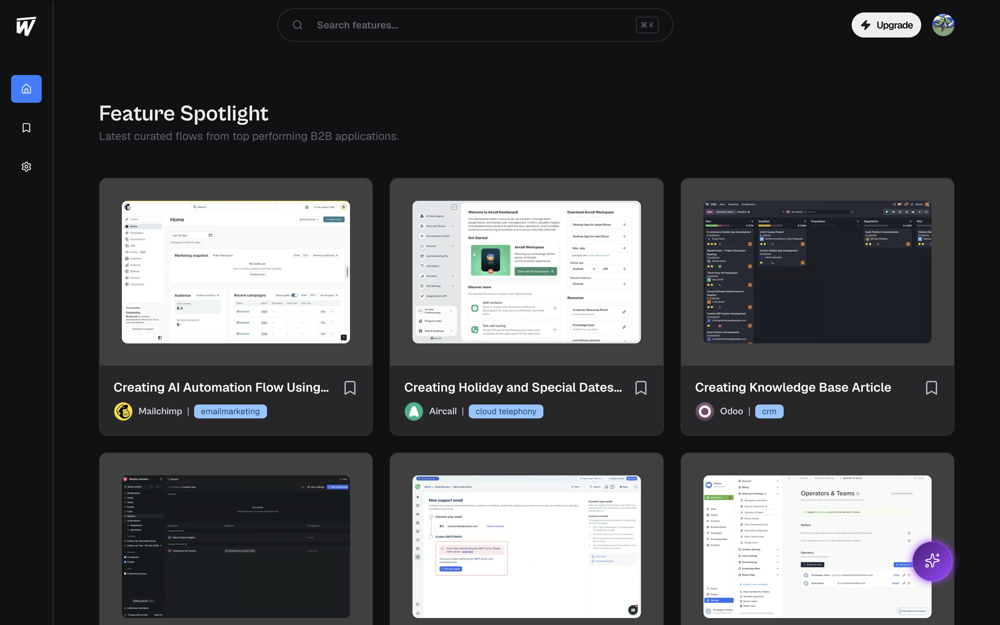
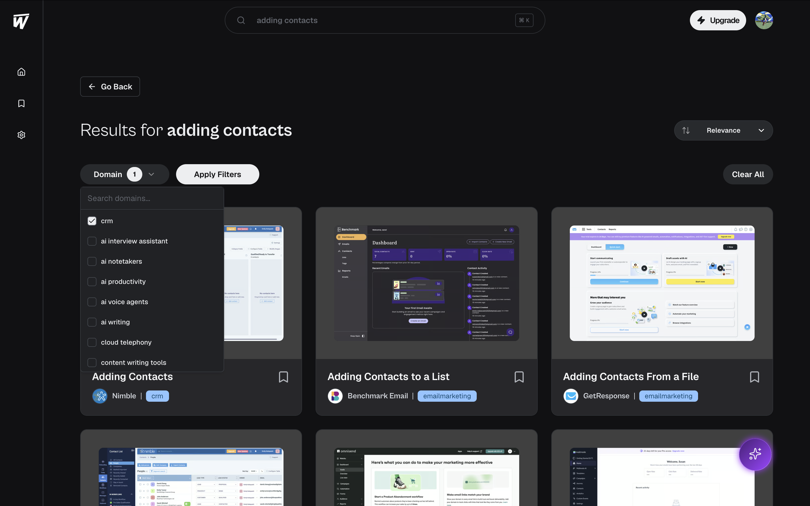
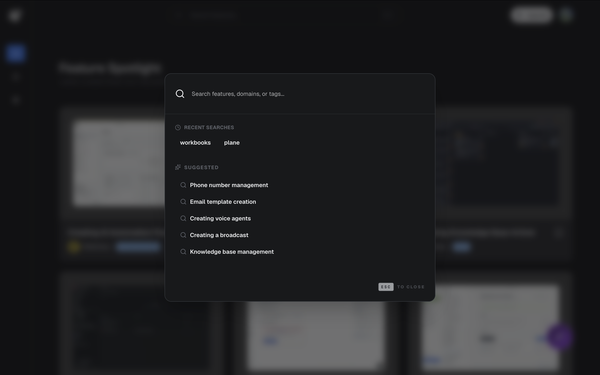
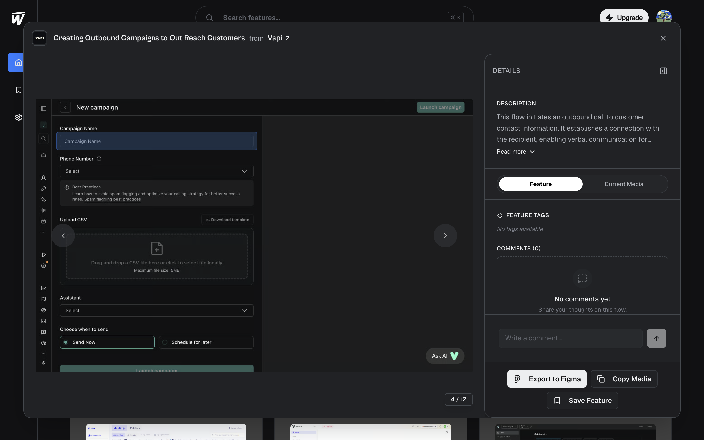
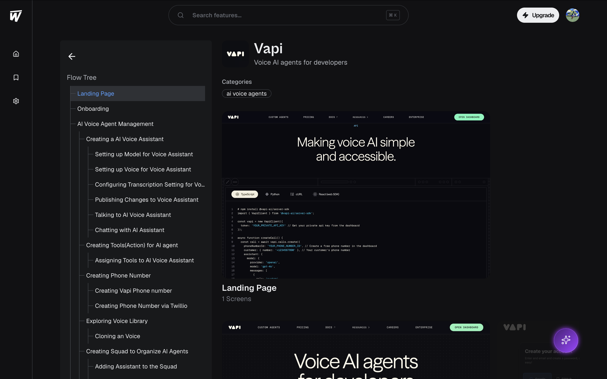
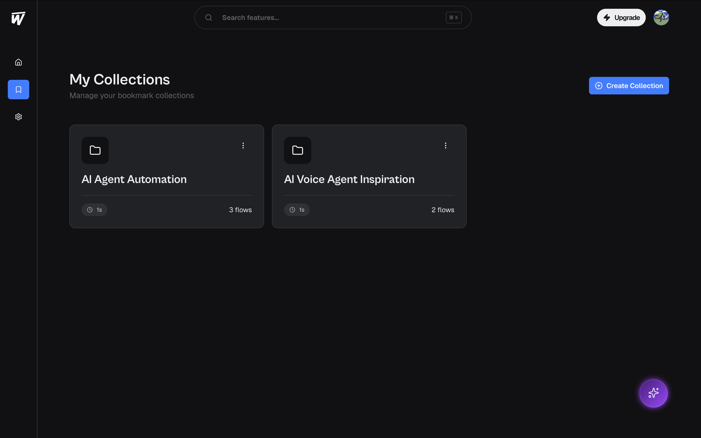
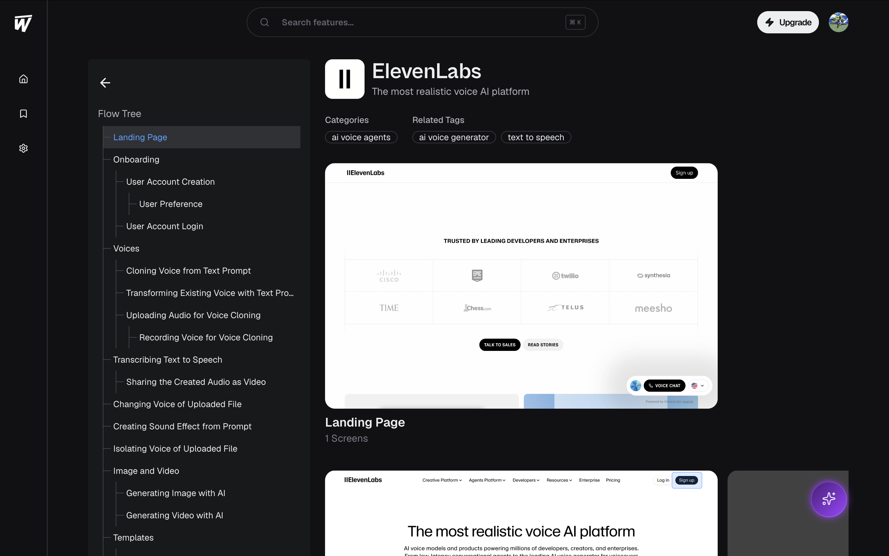
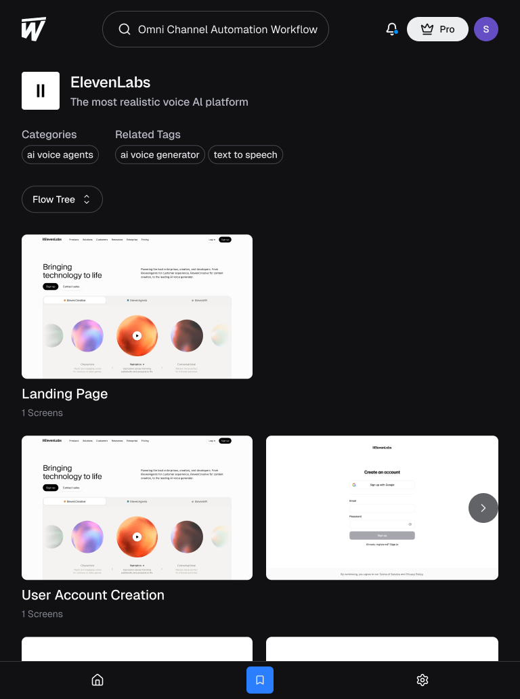
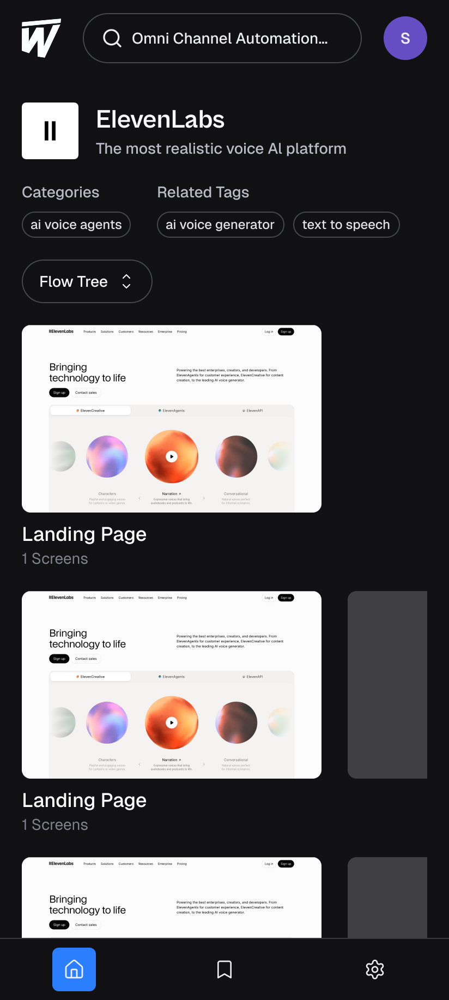

Product designers
Exploring reference products and researching how to structure features for their own products.
Product design
Designing a platform that helps product designers understand how features work, not just how they look.
Explore Watobu ↗The opportunity
Design inspiration platforms make it easier to explore existing interfaces, but individual screens don't always reveal how a feature works as a complete experience.
A designer might find an attractive screen but still need to understand what happens before it, what action leads to the next screen, and how the feature connects to the rest of the product.
This creates a gap between finding visual inspiration and understanding the product decisions behind it.
I worked on designing Watobu to bridge that gap by making complete app flows and user journeys easier to discover and explore.
Instead of treating inspiration as a collection of isolated screens, the experience was designed around how product designers and product managers research existing products, study features, and plan new user experiences.
Beyond individual screens
Designers need more than visual examples. They need context about how users move through an experience, what interactions connect screens, and how individual steps contribute to a broader user journey.
Without that context, inspiration can be difficult to translate into practical product decisions.
Exploring reference products and researching how to structure features for their own products.
Looking for interface inspiration while understanding the interactions and transitions that shape an experience.
Researching competitor experiences and exploring how products approach particular features and journeys.
How might I help product professionals discover relevant inspiration and understand a feature's complete user journey without having to piece together individual screens themselves?
Research & insight
I approached discovery through informal conversations with designers, stakeholder discussions, desk research, competitor analysis, and feedback sessions with intended users after the MVP was created.
My focus was to understand how the target audience could use a design inspiration platform, which capabilities would provide value, and how the product could support their existing research and design workflows.
Understanding a feature often requires seeing the sequence of screens, the actions connecting them, and the broader journey in which they belong. This shaped my approach: help users discover a flow, explore it step by step, and understand its relationship to the wider product.
Research established the direction of the design, but I don't have quantified findings or documented participant statistics to report. This insight describes the problem framing that guided my work, rather than a measured research result.
Core product journeys
I focused on the core journey: discovering relevant inspiration, opening a feature flow, understanding its screens, and using that knowledge in further design work.
The homepage acts as the entry point for exploring featured app features and user flows across industries. Industry-based and feature-based exploration helps users move toward relevant examples instead of browsing an undifferentiated collection of screenshots.
Search supports feature names, product names, and natural-language queries. This helps both people who know exactly what they need and people who can describe a desired experience without knowing the product terminology.
Users can click or swipe through screens in sequence. A guidance box explains the action that leads to the next screen, adding context to transitions and showing how a feature works from beginning to end.
Next: Confirm your details
The flow-tree experience shows how a selected feature connects to other screens and journeys within the same product, giving users a broader view of the product's structure.
Supporting features extend discovery into practical work: users can save useful flows, leave comments, and export selected flows to Figma for further exploration.
From requirements to UI
After defining the core experience, I translated requirements into screen designs, considering how users would navigate the platform and understand its different features.
I focused on making the key journeys understandable: finding a flow, navigating through its screens, exploring connected journeys, and accessing actions such as saving and exporting. I evaluated interface elements according to their purpose within the user journey, rather than including them simply for visual appeal.






Beyond desktop
I approached the design from a desktop-first perspective and adapted the experience for tablet and mobile screens.
This involved considering how discovery, navigation, and flow exploration would translate across screen sizes. Because Watobu's core value depends on viewing and understanding multiple app screens, responsive design needed to preserve the essential flow-exploration experience on different devices.



Prototyping & collaboration
I created Figma designs and prototypes to communicate the intended interface and interactions.
Prototyping helped represent how users would move through the experience, from discovering a feature to navigating its screens and exploring related journeys. I worked collaboratively on the project and prepared the designs for handoff, translating product requirements into visual interfaces that could guide implementation.
A live product
Watobu is live, with an experience designed around discovering and understanding complete app flows.
The product includes a homepage for discovery, industry and feature-based exploration, flexible search, sequential flow navigation, a flow tree, and actions for saving, commenting, and exporting flows to Figma.
I don't currently have verified usage metrics or measured impact data, so I can't claim specific improvements in engagement, research efficiency, or user satisfaction. Measuring how effectively the experience delivers its intended value remains an opportunity for future evaluation.
Learnings & next steps
Every design decision should have a clear rationale, align with the product's goals, and address a genuine user problem. Visual appeal alone isn't enough. I learned to consider how each element could benefit Watobu's target users and help them discover and understand complete app flows more effectively.
The project reinforced the importance of thinking beyond individual screens: a product experience also depends on how people discover information, navigate states, understand interactions, and carry what they learn into their own workflows.
I would invest more time in understanding users' needs before committing to design decisions, validate assumptions earlier through structured research and usability testing, and evaluate decisions against user needs and product objectives.
I would also establish clearer success measures before launch to assess whether users can find relevant flows, understand them, and apply them in their own work.
Good design inspiration should help people understand not just what a product looks like, but how its experience works.
Have something worth designing?